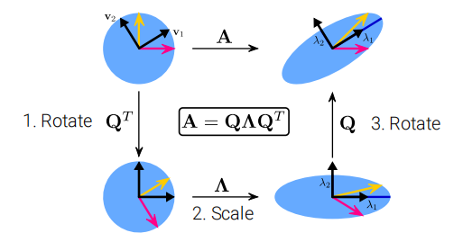

Mathematics for Deep Learning¶
约 553 个字 预计阅读时间 2 分钟
Abstract
The goal of this note is to repeat the necessary minimal math background to follow computervision lectures.
By Prof. Dr.-Ing. Andreas Geiger,University of Tubingen
Linear Algebra¶
Tensors¶
- A tensor is an array with more than 2 axes(e.g.:RGB image)
- Example for tensor of shape \(M \times N \times K\): \(A \in \mathbb{R}^{M\times N\times K}\)
Linear Dependence and Span¶
- We call \(A x= \sum_ix_i A\) a linear combination
- \(A x = b\) has solution \(\iff\) \(b\) is in the span of columns of \(A\)
- This particualr span is known as column space or range
- A square matrix with any two linearly dependent columns is called singular
Vectors and Matrix Norms¶
- \(\mathscr{l}_p\)-norm is defined as : \(\Vert x\Vert_p=(\sum_i\vert x_i\vert^p)^{\frac{1}{p}}\)
- \(\Vert x \Vert_\infty=max_i\vert x_i\vert\)
- The size of a matrix can be measured with the Frobenius norm: \(\Vert A \Vert_F=\sqrt{\sum_{i,j}a_{i,j}^2}\)
Eigenvalue Decomposition¶
- \(Av=\lambda v\)
- We concatenate all eigenvectors to form a matrix \(V=( v_1,…, v_N)\)
- We form all eignvalues into a diagnal matrix \(\Lambda = diag(\lambda_1,…，\lambda_N)^{T}\)
- The eigendecomposition of \(A\) is given by: \(A = V \Lambda V^{-1}\)
- Every real symmetric matrix \(A\) can be decomposed into \(A = Q \Lambda Q^{T}\)
- \(Q\) is an orthonormal matrix composed of the eigenvectors \({ v_i}_{i=1}^{N}\) of \(A\)

\(A\) distorts the unit circle by scaling space in direction \(v_i\) by \(\lambda_i\)
The EVD can be computed easily in NumPy: np.linalg.eig
Singular Value Decomposition¶
- Eigenvalue decomposition can only be app;ied to square matrices
- For non-square matrices we can use singular value decomposition
- Factorizes a matrx \(A \in \mathbb{R}^{M\times N}\) as \(A = U D V^{T}\), where \(U \in \mathbb R^{M\times M}, D\in \mathbb R^{M\times N}, V \in \mathbb R^{N\times N}\)
- The elements along the diagonal of \(D\) are known as singular values
- The columns of \(U\) and \(V\) are left/right-singular vectors,respectively.
Relationship between EVD and SVD¶
- The right-singular vectors are the eigenvectors of \(A^{T} A\)
- \(A^{T} A = V D U^{T} U DV^{T}= V D^2 V^{T}\)
-
The left-singular vectors are the egienvectors of \(AA^{T}\)
-
The eigenvalues of \(A^{T} A\) and \(A A^{T}\) are equal to the squared singular values of \(A\)
Probability¶
Terminology¶
- A random variable is a variable that can take on different values randomly
- Random variables may be either discrete or continuous
- A discrete random variable has a finite or countably infinite number of states
- A continuous random vairiable is associated with a real value
- A probability distribution is a descrption of how likely a random variable or set of random variable is to take on each of its possible states
Discrete Probability Distributions¶
\(p(x)\) for \(p(X=x)\in [0,1]\), \(p(x)\) is called the probability mass function
\(p(X)\) denote the probability distribution over \(X\)
If \(X\) follows distribution \(p(X)\), we also write \(X\sim p(X)\)
- Joint probability: \(p(x,y)\) for \(p(X=x,Y=y)\)
- Conditional probability: \(p(x|y)=\frac{p(x,y)}{p(y)}\)
- Marginal probability: \(p(y)=\sum_{x\in \mathcal{X}}p(x,y)\)